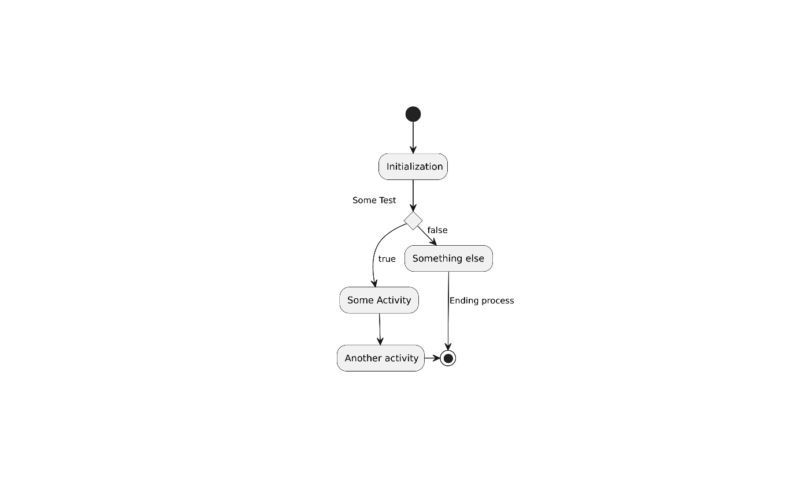

plantuml
packagevignettes/BasicUsage.Rmd
BasicUsage.RmdThis package provides the functionality to create UML graphs using the PlantUML language.
The package does not come with the plantuml binary, which needs to be installed as well. repeated calling of this function updates the binary.
Now we plot in in a device using vector format (svg) as intermediate format, which is the default
plot(
x = x
)
#> [1] "/tmp/RtmpgNDPZp/plantuml.1b02816c299.svg"The default server used is the offocial plantuml web server at http://www.plantuml.com/plantuml/. If yo weant to cretae the graphas locally, you have to
I will demonstrate this in a small example:
# 1. Make sure that the plantuml file has been installed.
# The easiest is to use the supplied command
plantuml_update()
# 2. set the plantuml options to point to the local plantuml picoweb server
server_set("local")
# 3. start the plantuml picoweb server
server_start()Now the following graph is created locally
plot(
x = x
)Finally, you should stop the server:
To reset the plantuml options to use the default web server, do
server_set("remote")